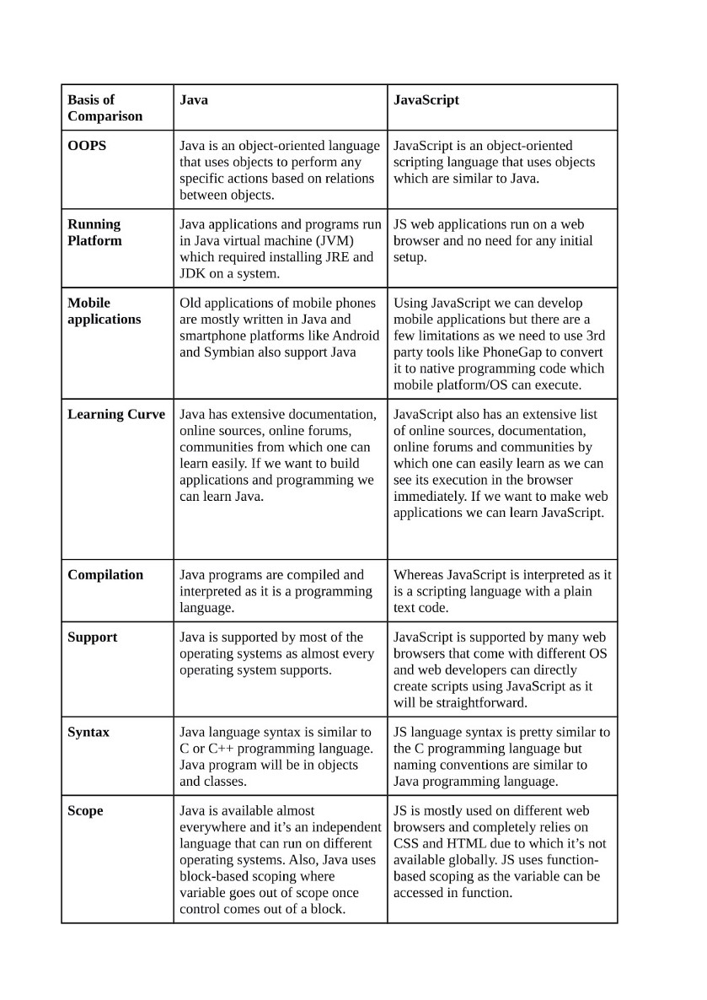

Generar Tabla con numero dado por el usuario
Invierte el numero que quieras
Problema a resolver balanced brackets. Ingresa Brackets como ( ) , [ ] y { }
¿Qué diferencias y semejanzas hay entre Java y JavaScript?
A pesar de sonar muy parecido, JAVA y JavaScript son absolutamente diferentes.
¿Qué métodos tiene el objeto Date? (Menciona al menos 5*)
¿Qué métodos tienen los arreglos? (Menciona al menos 5*)
¿Cómo se declara una variable con alcance local dentro de una función?
Let
¿Qué implicaciones tiene utilizar variables globales dentro de funciones?
Puede tener problemas con otras variables, ademas de tener problemas de scope
¿Qué método de String se puede utilizar para buscar patrones con expresiones regulares?¿Para qué podrías utilizar esto en una aplicación web?
match(), para hacer captcha por ejemplo.